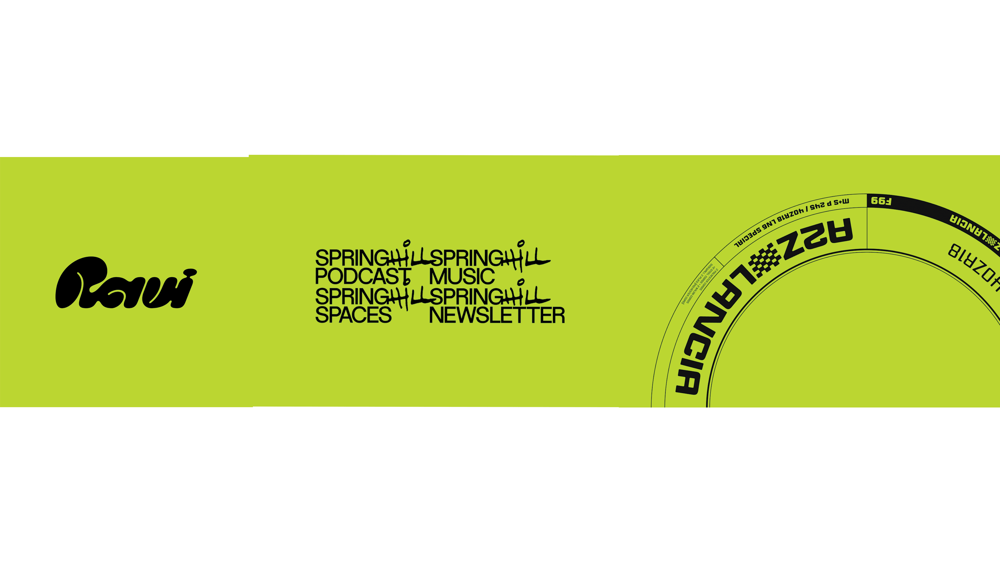

David's work is versitile. I love the pop of neon green he used for his website and how he showcases his skills. There are so many different fonts and sizes for each project he worked for, and that encourages me to explore all he different styles.